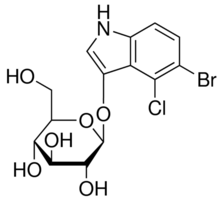

| Product Name | 5-Bromo-4-chloro-3-indolyl-beta-D-glucopyranoside |
| Synonyms | 5-Bromo-4-chloro-3-indoxylglucoside;5-Bromo-4-chloroindol-3-yl-beta-D- glucopyranoside;beta-D-Glucopyranoside, 5-bromo-4-chloro-1H-indol-3-yl; 5-bromo-4-chloro-1H-indol-3-yl beta-D-glucopyranoside;5-bromo-4-chloro- 1H-indol-3-yl beta-L-galactopyranoside;5-Bromo-4-chloro-3-indolyl β-D-glucopyranosideCHX |
| Molecular Formula | C14H15BrClNO6 |
| Molecular Weight | 408.629 |
| CAS Registry Number | 15548-60-4 |
| Molecular Structure |  |
| Appearance | White to off-white crystalline powder |
| Purity (By HPLC) | Min 99%+ |
| Specific optical rotation | -81° ± 3° [α]D.20 (c=1, DMF) |
| Solubility | DMF: 50 mg/mL, clear, colorless to very faintly yellow |
| Water content (BY KF) | Max 1% |
| Melting Point | 249-251℃ |
| Storage | Shipped at Ambient Temperature. Store at +2 - 8°C. |
| For Research Use Only | Not Intended for Diagnostic or Therapeutic Use. |
| Application: | A histochemical substrate for β-glucosidase |
| References | Horwitz, J.P., et al. J. Med. Chem. 7, 574, (1964) |